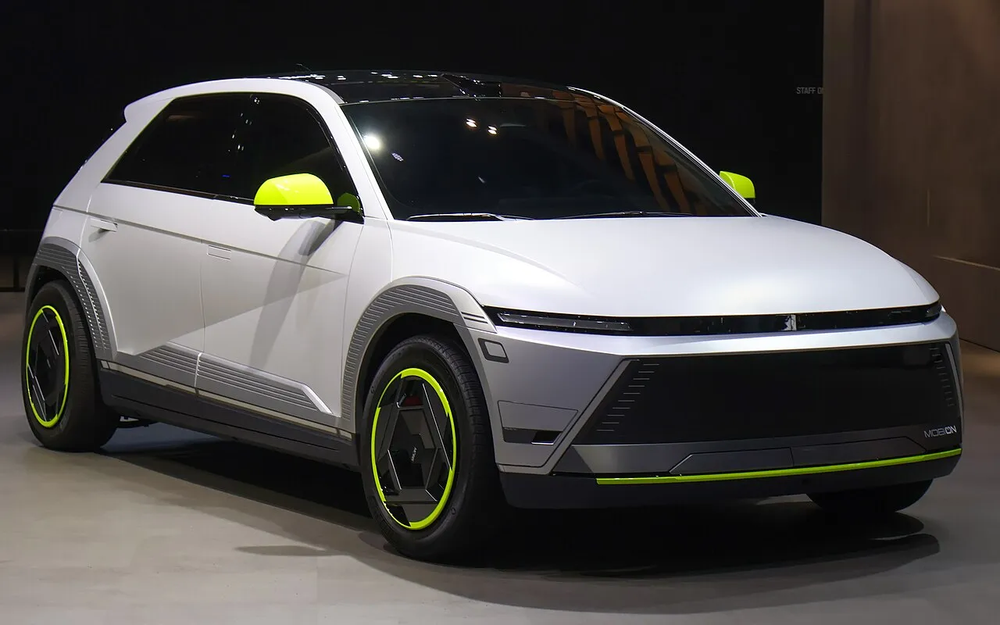
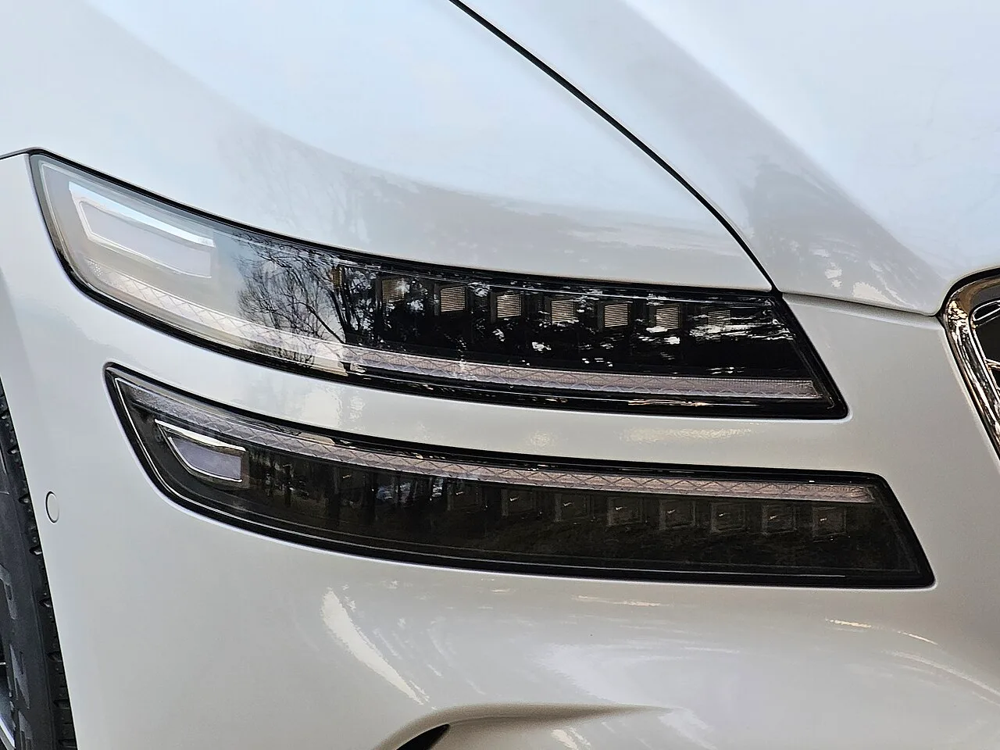
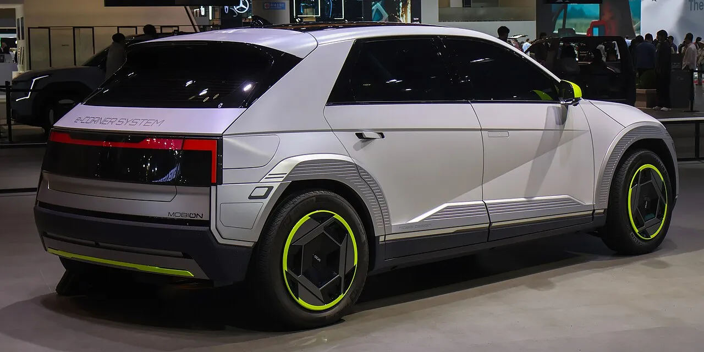
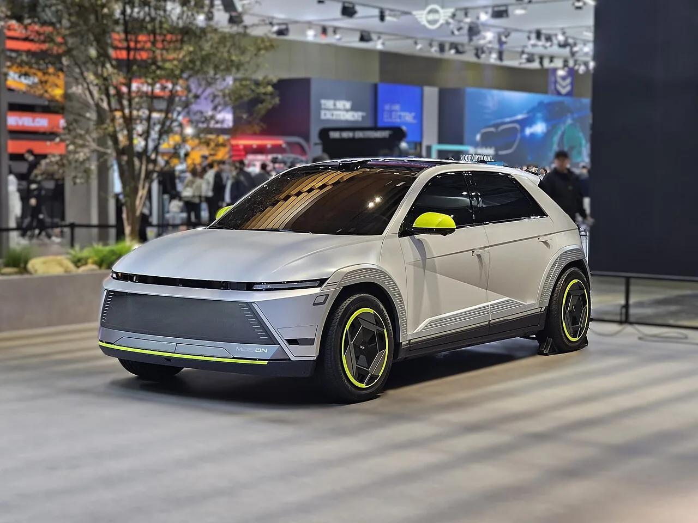
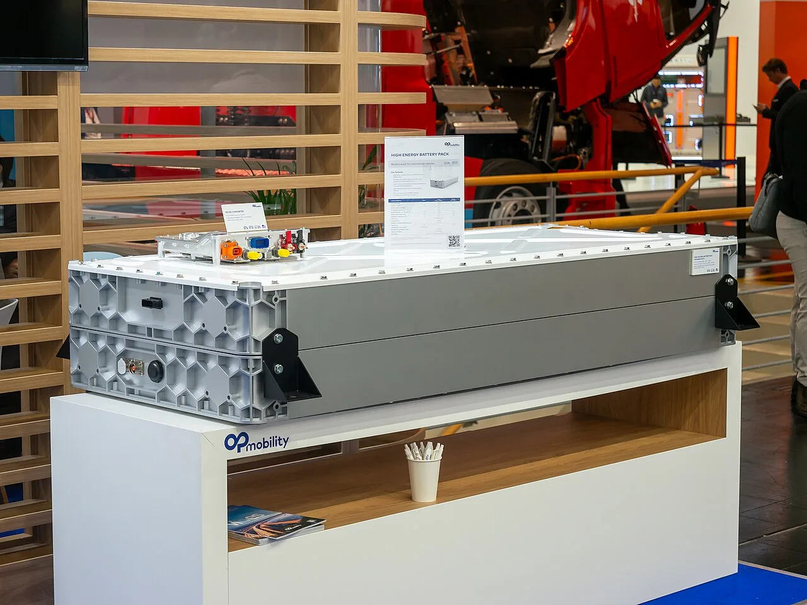
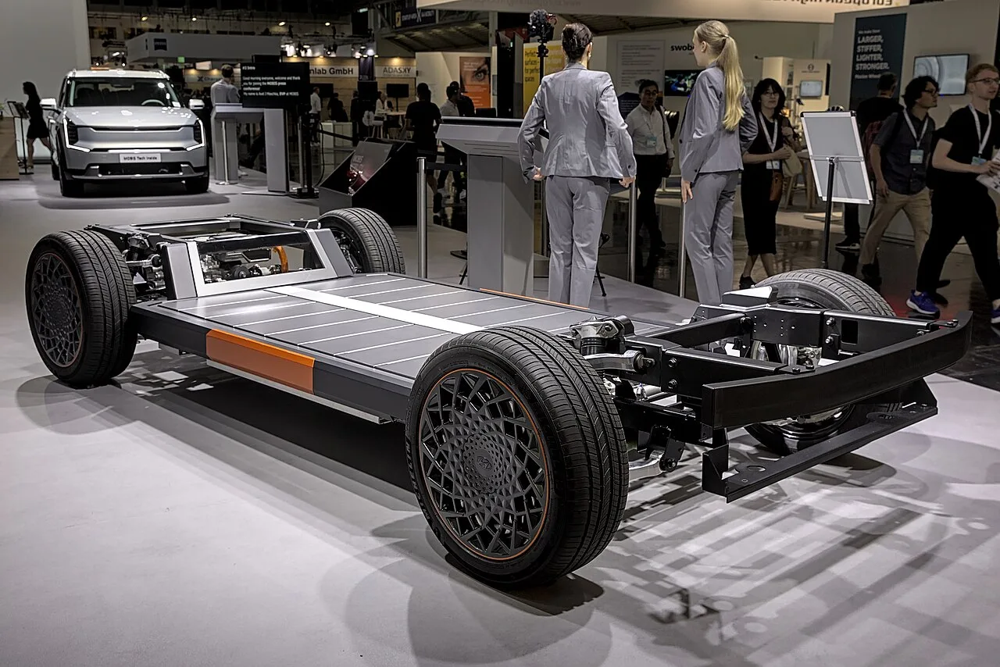

▲ 제네시스 G80 부분변경 모델의 헤드램프(참고 사진). 램프는 전동화 시대 차의 얼굴이자 센서 연동 안전 장치다 ⓒ Damian B Oh, Wikimedia Commons (CC BY-SA 4.0)
"전동화 시대에 램프는 '부품'일까, '센서'일까." 현대모비스가 9월 30일 이사회를 열어 램프사업 부문을 물적분할하기로 결의하고, 분할로 생기는 신설회사 지분 100%를 프랑스 부품사 OP모빌리티(OPmobility)에 넘기는 주식매매계약(SPA)을 체결했다. 분할기일은 2027년 4월 1일이다. 지피코리아가 이 소식을 전했고, 파이낸셜뉴스·헤럴드경제·EBN·한국일보 보도와 OP모빌리티 발표를 교차 확인해 정리했다. 이 글은 투자 판단을 권하는 글이 아니다. 공시·보도에 나온 사실과 각 주체의 주장을 구분해 분할 구조, 일정, 램프사업 규모, 주주 영향, 그리고 램프 기술 관점의 의미를 살펴본다.
1. 무엇이 결정됐나 — 분할 구조 한눈에 보기
보도를 종합하면 이번 결정은 단순·물적분할 후 매각이다. 현대모비스가 램프사업 부문을 떼어 새 회사를 세우면 분할 신설회사 주식은 존속회사인 현대모비스가 100% 보유하고, 이후 그 주식 전량을 OP모빌리티에 넘기는 구조다. 물적분할은 흔히 자회사 상장 이후 모회사 주주 가치 논란과 함께 거론되지만, 이번 건은 보도된 계약 구조상 신설회사가 비상장 상태로 곧바로 매각된다는 점이 다르다. 다만 이것이 주주에게 유리한지 불리한지에 대한 판단은 아래에서 증권사 분석을 있는 그대로 인용하는 데 그친다.
| 항목 | 내용 | 근거 |
|---|---|---|
| 결의 | 2026년 9월 30일 임시 이사회, 분할 안건 승인과 SPA 체결 | 파이낸셜뉴스·한국일보 |
| 분할 방식 | 단순·물적분할(분할 대상은 램프사업 부문) | 공시 인용 보도 |
| 분할신설회사 | 비상장, 가칭 현대모비스램프 주식회사 | 헤럴드경제·EBN |
| 존속회사 지분 | 분할 직후 100% 보유 후 전량 OP모빌리티에 양도 | EBN·블로터 등 |
| 분할기일 | 2027년 4월 1일 | 공시 인용 다수 매체 |
| 매각 가격 | 기업가치(enterprise value) 6,000억 원. 순부채·운전자본 조정 후 최종 지급액은 공개되지 않음 | OP모빌리티 발표·언론 |
| 거래 종결 예상 | 2027년 하반기(독점금지 등 규제 승인 전제) | OP모빌리티·연합뉴스 |
| 분할 대상 외 | 현대차·기아 A/S용 부품 사업은 현대모비스에 남음 | EBN·헤럴드경제 |
분할 대상은 승용차용 헤드램프, 리어램프, 외장 보디램프의 설계·개발·시험·생산·판매 사업이다. 현대모비스는 이번 결정을 두고 "미래 모빌리티 시장에 효과적으로 대응해 지속가능한 성장 기반을 확보"하기 위한 것이라고 밝혔고, 헤럴드경제 등은 회사 측 설명을 '선택과 집중'으로 요약했다. 서울경제 영문판은 회사가 자동차 반도체·로보틱스·소프트웨어중심차(SDV)에 집중하려 한다고 전했다. 시작점이 된 지피코리아 보도 바로가기에서 확인 가능하다.

▲ 2025 서울모빌리티쇼에 나온 현대모비스 모비온 콘셉트. 앞면을 가로지르는 얇은 라이트바가 전기차 시대 램프의 방향을 보여준다 ⓒ Treeinkr, Wikimedia Commons (CC BY-SA 4.0)
2. 일정표 — 주총부터 종결까지
EBN·이투데이·블로터 등 보도를 종합하면 남은 절차는 임시주주총회의 분할계획서 승인과 기업결합 신고다. 주주총회는 서울 GS타워에서 열린다고 헤럴드경제가 전했다. 일부 매체는 연도·기간을 다르게 적었는데, 여기서는 복수 매체가 일치하는 날짜만 담았다.
| 날짜 | 내용 |
|---|---|
| 2026년 1월 | OP모빌리티와 양해각서(MOU) 체결(OP모빌리티가 1월 27일 보도자료로 발표) |
| 2026년 9월 30일 | 이사회 결의, SPA 체결 |
| 2026년 10월 15일 | 임시주총 의결권 주주 확정 기준일 |
| 2026년 11월 9~23일 | 분할 반대의사 접수 |
| 2026년 11월 24일 | 임시주주총회, 분할계획서 승인 안건 |
| 2026년 11월 24일~12월 14일 | 주식매수청구권 행사 기간 |
| 2027년 4월 1일 | 분할기일 |
| 2027년 하반기 | OP모빌리티 거래 종결 예상 |
✔ 확인 못 한 사항
- DART 사이트 원문은 직접 열람하지 못했다. 다만 공시 전재 페이지(분할 기일·주총일·매수청구 기간·분할신설회사 재무 수치)와 일정·매수청구가를 인용한 여러 보도가 서로 일치해 본문 수치를 확정으로 썼다
- 6,000억 원은 OP모빌리티가 밝힌 기업가치(enterprise value) 기준이며, 계약상 가격 조정 조항과 최종 지급액은 확인 못 함
- 분할 후 신설회사 사명은 공시상 가칭(현대모비스 램프 주식회사)이다
3. 램프사업은 어느 정도 규모인가
수치가 두 종류로 나와 헷갈리기 쉽다. 분할 공시상 분할 대상(국내 사업부)의 2025년 매출은 1조 220억 원이고, OP모빌리티가 밝힌 해외 사업장까지 포함한 2025년 매출은 약 2조 5,000억 원이다. 둘은 범위가 다르므로 하나로 오해하면 안 된다. 서울경제 영문판은 매출을 "2조 원"으로 적었지만, OP모빌리티 발표와 뉴시스·파이낸셜뉴스 등 국내 보도가 모두 2조 5,000억 원이라 영문판 표기는 반올림이거나 부정확한 것으로 보고 2.5조 원을 기준으로 삼는다(영문판이 어떤 범위를 기준으로 했는지는 확인 못 함).
| 구분 | 수치 | 출처 |
|---|---|---|
| 분할 대상 매출 | 1조 220억 원 | 분할계획 공시(1조 220억 원, 정확히 1조 220억 1,064만 원 규모) 및 보도 |
| 분할 대상 자산 | 약 5,415억 원 | 공시 인용 |
| 분할 대상 부채 | 약 1,655억 원 | 공시 인용 |
| 순자산(자본) | 약 3,760억 원 | 헤럴드경제·한국투자증권 |
| 해외 포함 매출 | 약 2조 5,000억 원(영업이익률 플러스) | OP모빌리티 발표 |
| 생산공장 | 5개(한국·중국·멕시코·체코) | OP모빌리티·연합뉴스 |
| 이전 인력 | 약 400명 | 서울경제 영문판(다른 매체 미확인) |
생산 자회사인 유니투스·현대IHL 근로자는 100% 고용 승계로 합의했다고 한국일보가 전했다. 영업이익 수치 자체는 현대모비스가 별도로 밝히지 않았고, 한국투자증권이 램프사업 수익성을 2~3% 수준으로 본 보도(파이낸셜뉴스)가 확인되는 전부다. 고객사별 매출 비중(현대차·기아 외 고객 등)은 이번 보도에서 확인 못 함이다.

▲ 제네시스 G80 헤드램프 근접 사진(참고, 이 차의 램프 공급사는 확인되지 않았다). 램프는 외관 디자인의 핵심 부품이자 센서와 연동되는 안전 장치가 됐다 ⓒ Damian B Oh, Wikimedia Commons (CC BY-SA 4.0)
4. 전동화 시대의 램프 — 왜 중요하고, 왜 떼어내나
전동화 시대에 램프는 디자인 아이덴티티가 됐다. 엔진 그릴이 사라진 전기차에서 얇은 라이트바와 픽셀 램프가 차의 '얼굴'을 대신하기 때문이다. 현대모비스도 이 흐름에 맞춰 연구를 이어왔다. 지식재산처 주관 2025년 특허기술상 대상을 받은 ADAS 연계 지능형 헤드램프(ADB)가 대표 사례다. 전자신문 등에 따르면 ADB는 카메라로 맞은편 차량을 감지해 해당 부분만 상향등을 가리는 방식이며, 내비게이션 등 정보를 하드웨어·소프트웨어와 결합해 주행 상황별로 빔 패턴을 조절하도록 했다. 기사는 이를 기존 ADB 대비 개선 폭으로 소개했다.
| 항목 | 내용 |
|---|---|
| 눈부심 차단 | 한계 구간에서 평균 93% 이상 |
| 시야 확보 | 최대 35% 개선 |
| 소비전력 | 최대 80% 저감 |
| 핵심 기능 | 추월 감지, 곡선로 예측, 높은 차량 선택 감광, 반자율주행 빔 패턴 |
| 적용 | 1세대 일부가 제네시스 G80에 적용, 2세대는 현대차·기아·제네시스 확대 예정 |
| 특허 | 49건 |

▲ 모비온 콘셉트의 후면. 리어램프도 차폭 전체를 잇는 라이트바 형태로 설계됐다(이 전시차의 램프를 현대모비스가 만들었는지는 별도 확인 필요) ⓒ Treeinkr, Wikimedia Commons (CC BY-SA 4.0)
그렇다면 왜 이런 기술이 있는 사업을 매각할까. 회사 설명은 '선택과 집중'이다. 녹색경제신문은 램프 같은 전통 제조 자산을 정리해 SDV와 자율주행 R&D에 자원을 모으려는 포트폴리오 재편으로 해석했다. 이는 보도의 해석이며, 매각 대금의 구체적 사용처는 회사가 밝히지 않았다(확인 못 함). 램프는 센서·제어와 맞닿는 부품이라 매각 이후 현대차·기아와의 공동 개발 구조가 어떻게 이어질지는 이번 보도에서 확인되지 않았다. 사무연구직 노조는 기술 유출과 협력사 영향을 우려했다고 시사저널이 전했다.

▲ 현대모비스 모비온(MOBION) 콘셉트. 전기차에서는 가로형 라이트바가 전면 디자인의 중심이 된다 ⓒ Damian B Oh, Wikimedia Commons (CC BY-SA 4.0)
5. 인수자 OP모빌리티는 누구인가
OP모빌리티는 구 플라스틱 옴니엄(Plastic Omnium)이 사명을 바꾼 프랑스 자동차 부품사로, 연료탱크·외장 부품·배터리 시스템·수소 시스템 등을 만든다. 이번 인수가 이뤄지면 자사 조명 사업과 모비스 램프가 합쳐진다. 펠리시 뷔렐(Félicie Burelle) CEO는 "두 조명 사업의 결합이 자동차 조명 시장의 선도 업체를 만들 것"이라는 취지로 말했고, 아시아·북미·유럽에서 입지가 강화된다고 밝혔다. OP모빌리티는 이번 인수가 부채 감축 목표를 훼손하지 않는다고도 했다. 1월 MOU 당시 보도자료는 OP모빌리티 공식 사이트 바로가기에서 확인 가능하다.

▲ 2024년 IAA 모빌리티 전시회의 OPmobility 부스 전시물(배터리 시스템). 램프는 이 회사가 영역을 넓히는 새 축이 된다 ⓒ Matti Blume, Wikimedia Commons (CC BY-SA 4.0)
6. 주주에게는 어떤 영향이 있나 — 공시와 증권사 분석
분할 반대 주주는 주당 40만 8,394원(예정가격)에 주식매수청구권을 행사할 수 있다. 총 매수가액이 2,300억 원을 넘으면 이사회가 분할을 중단하거나 철회할 수 있다는 조건이 붙었다. 블로터는 이사회 전날 종가 36만 7,000원에서 10월 1일 장 시작 전 39만 3,000원 안팎으로 올랐다고 전하며, 주가가 매수청구가 부근에서 유지되는지가 변수라고 짚었다. 파이낸셜뉴스는 10월 1일 오전 9시 10분 기준 38만 8,500원(+5.86%), 장중 고가 39만 4,500원이라고 전했다.
| 주체 | 보도된 내용 |
|---|---|
| 한국투자증권 | 순자산 3,760억 원 사업을 약 1.6배(PBR)·PER 약 25배 수준에 매각, 연결 영업이익 영향은 1% 안팎(sateconomy.co.kr 보도). 김창호 연구원은 "성장성이 낮은 사업을 자기자본 이상에 매각한 만큼 기존 주주에게 불리할 것이 없다"고 분석하고 목표주가 70만 원 유지 |
| 한국투자증권(주주환원) | 반대 주주 매수청구로 확보한 자사주는 개정 상법상 1년 내 소각해야 해 "의도치 않은 주주환원"과 같은 효과 가능성 |
| 대신증권 | 매각 대상 매출이 1조 원 수준으로 전체 매출 비중이 제한적이어서 손익 영향은 크지 않다고 평가. 다만 액추에이터 대량양산까지 시차가 있다는 이유로 목표주가를 69만 원에서 58만 원으로 낮추고 투자의견 '매수' 유지(한국경제) |
| 사무연구직 노조 | "전적 반대", 본계약 무효 가처분 신청 검토(한국일보·시사저널). 한국일보는 생산 자회사(유니투스·현대IHL) 노조와는 합의가 이뤄졌다고 구분해 전했다 |
📍 읽을 때 주의
위 증권사 의견은 각 증권사의 분석이며 카프리즘의 평가가 아니다. 매수청구 규모가 임계치(2,300억 원)를 넘을지는 주총 이후에야 확정된다. 이 글은 어떤 투자 행동도 권하지 않는다.
7. 현대모비스의 다른 변화와 함께 보기
현대모비스는 이번 램프 매각과 함께 범퍼 사업 정리도 추진할 예정이라고 한국일보·녹색경제신문이 전했다. 반면 전동화 쪽에서는 슬로바키아에 유럽 첫 전기차 PE시스템 공장을 가동했다. 이 부분은 현대모비스 슬로바키아 전기차 구동장치 공장 기사에서 따로 다뤘다. 이번 램프 분할은 그 반대편, 즉 전통 부품 사업의 정리라는 맥락에서 읽힌다.

▲ 현대모비스가 IAA 2023에 전시한 전기차용 통합 섀시 모듈(e-CCPM). 회사가 강조하는 전동화 사업의 예다 ⓒ Alexander-93, Wikimedia Commons (CC BY-SA 4.0)
8. 독자가 궁금해할 만한 점 — 자주 묻는 질문
| 질문 | 현재까지 확인된 답 |
|---|---|
| 지금 타는 현대차·기아 램프가 바뀌나? | 분할 기일은 2027년 4월 1일, 거래 종결은 2027년 하반기 예정이라 당장 달라지는 것은 없다. 현대차·기아 A/S용 부품 사업은 현대모비스에 남는다(공시) |
| OP모빌리티는 이 램프를 계속 현대차·기아에 공급하나? | OP모빌리티 CEO가 현대차·기아와의 파트너십을 더 깊게 하겠다고 밝혔다. 공급 계약 기간·물량 등 세부 조건은 공개되지 않았다 |
| 주총 승인은 확정인가? | 아니다. 11월 24일 임시주총 승인과 반대 주주 매수청구액 한도(2,300억 원) 이내라는 조건, 국내외 기업결합 승인이 남아 있다 |
| 매각 대금 6,000억 원은 전부 현대모비스가 받나? | 6,000억 원은 기업가치 기준 수치다. 순부채 등 조정 후 최종 수령액은 공개되지 않았다 |
| 근로자 고용은? | 회사는 승계 대상 구성원의 고용과 권리·의무가 신설법인으로 승계된다고 밝혔다. 본사 사무연구직 노조는 반대하며 법적 대응을 예고했다 |
9. 요약
현대모비스는 9월 30일 이사회에서 램프사업 물적분할을 결의했고, 분할기일은 2027년 4월 1일이다. 신설회사 지분 100%는 OP모빌리티에 약 6,000억 원에 넘기며, 거래 종결은 2027년 하반기가 예상된다.
임시주총은 11월 24일이며, 반대 주주 주식매수청구 예정가격은 주당 40만 8,394원이다. 매수청구액이 2,300억 원을 넘으면 이사회가 분할을 중단·철회할 수 있다.
분할 대상 매출은 1조 220억 원, 해외 포함 약 2조 5,000억 원이며 생산공장은 5곳이다. 매각 대금 사용처, 고객사별 비중, 영업이익은 이번 보도에서 확인 못 함이다. 증권사 의견과 노조 반응은 각 주체의 입장일 뿐이므로 후속 공시와 주총 결과를 확인하는 것이 좋다.